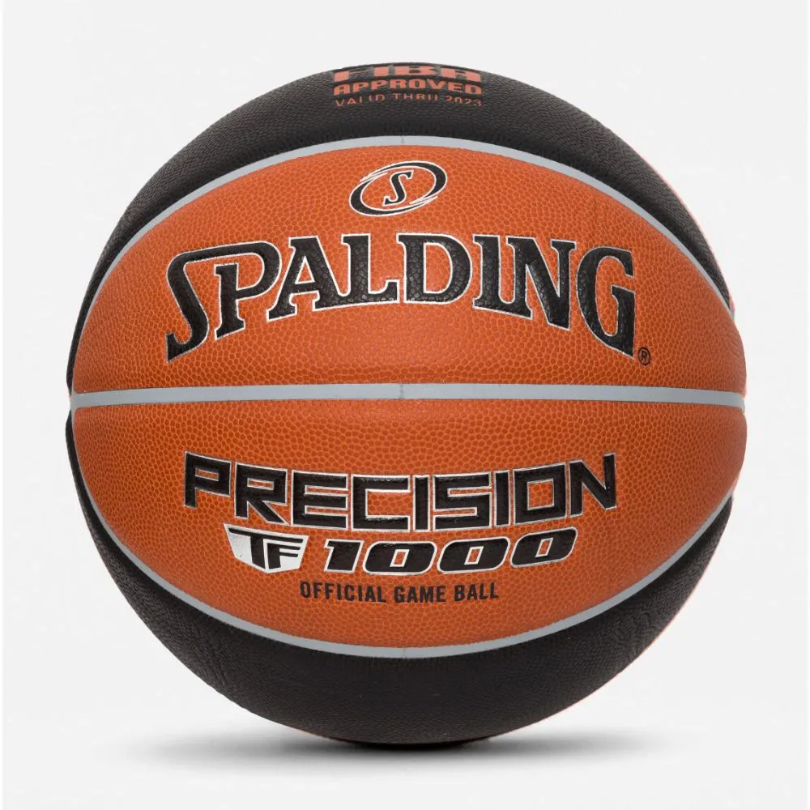

Melhores produtos do mercado

Preço: R$ 500,00
Entressola: EVA
Medida da circunferência: 60cm.
Material do Cabedal: Têxtil Sintético
Lingueta Macia Acolchoada
Palmilha Integrada Forrada.
Preço: R$ 541,49
A TF-1000 Precision foi desenvolvida nos mais altos padrões de qualidade e performance que só a Spalding conhece bem, afinal desenvolveu a primeira bola de basquete em 1894. Essa bola conta com selo master de aprovação da Federação Internacional de Basquete (FIBA) e revestimento em microfibra premium e GAME READY GRIP, que desde o primeiro jogo já proporciona o melhor quique e toque, graças à camada adicional de espuma interna. Além disso, foi especialmente desenvolvida para basquete indoor (pisos oficiais). Seu interior conta com enrolamento feito 100% em náilon, que garante proteção e formato perfeito, sem ovalizar com o tempo.
Preço: R$ 277,00
Formas de pagamentos aceitas: Pix
CHAVE PIX: 70620581654
Proprietário: Iago Ornels De Souza

O basquete foi criado em 1891, por James Naismith, um professor de educação física canadense. Ele queria criar um esporte que pudesse ser praticado em ambientes fechados durante o inverno rigoroso de Massachusetts, nos EUA. A primeira partida foi jogada com uma bola de futebol e cestas de pêssego fixadas em varandas.
Principais marcos:
1936: Basquete vira esporte olímpico (Jogos de Berlim).
1946: Fundação da NBA (National Basketball Association).
1992: "Dream Team" dos EUA nos Jogos Olímpicos de Barcelona marca a era moderna do basquete globalizado.
üèÜ Principais Campeonatos Internacionais: NBA (EUA) ‚Äì Maior liga profissional do mundo. FIBA World Cup (Copa do Mundo de Basquete) ‚Äì Organizada pela FIBA, re√∫ne sele√ß√µes do mundo todo. Jogos Ol√≠mpicos ‚Äì Disputado a cada 4 anos com sele√ß√µes nacionais. EuroLeague ‚Äì Principal liga da Europa. No Brasil: NBB (Novo Basquete Brasil) ‚Äì Principal liga brasileira, criada em 2008. Campeonato Brasileiro de Basquete Feminino ‚Äì Competi√ß√£o de clubes femininos.
üßç‚Äç‚ôÇÔ∏è Grandes Atletas Internacionais: Michael Jordan ‚Äì Considerado o maior de todos os tempos. LeBron James ‚Äì √çcone atual, destaque na NBA desde 2003. Kobe Bryant ‚Äì Lenda dos Lakers, com 5 t√≠tulos da NBA. Stephen Curry ‚Äì Revolucionou o jogo com os arremessos de tr√™s pontos. Shaquille O‚ÄôNeal, Magic Johnson, Larry Bird, Tim Duncan ‚Äì Todos lendas com impacto hist√≥rico. Brasileiros: Oscar Schmidt ‚Äì "M√£o Santa", maior pontuador da hist√≥ria do basquete mundial. Hort√™ncia e Magic Paula ‚Äì √çcones do basquete feminino. Anderson Varej√£o, Nen√™, Leandrinho, Tiago Splitter ‚Äì Jogaram na NBA. Damiris Dantas e √ârika de Souza ‚Äì Destaques no basquete feminino mundial.
⛹️‍♂️ Regras Básicas Dois times de cinco jogadores em quadra. Objetivo: Fazer a bola passar pelo aro adversário (cesta = 2 ou 3 pontos). Vence quem tiver mais pontos ao fim dos 4 períodos de 10 ou 12 minutos (dependendo da liga). É proibido andar com a bola sem quicá-la (drible) e há limites de tempo para atacar (24 segundos na NBA).
üìå Curiosidades O primeiro placar de basquete da hist√≥ria foi 1 a 0. A NBA tem jogos com m√©dia de p√∫blico superior a 17 mil pessoas. A bola de basquete oficial tem cerca de 75 cm de circunfer√™ncia. O Brasil foi campe√£o mundial masculino em 1959 e 1963.
Para mais informacoes copie e cole no google: https://www.cob.org.br/time-brasil/esportes/1-basquete